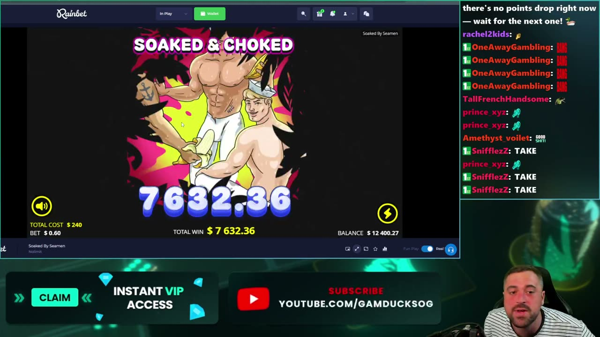
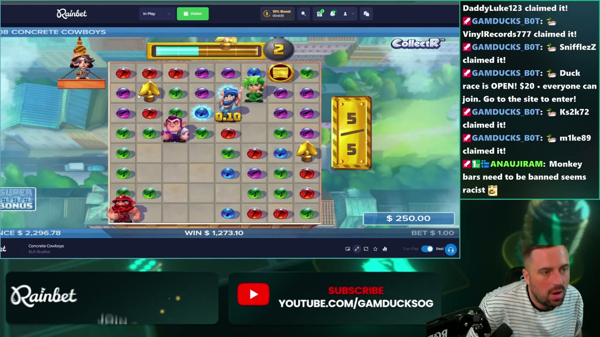
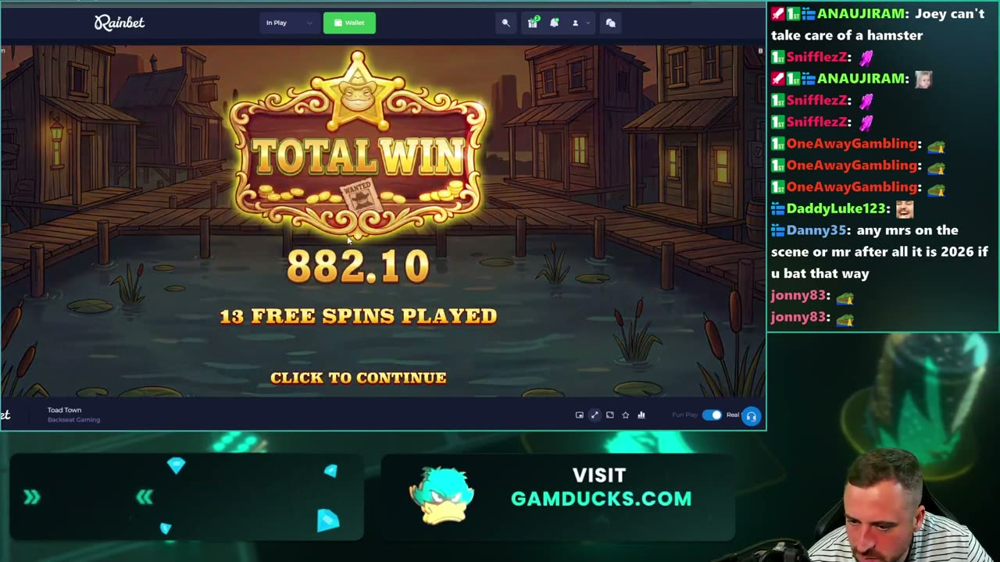
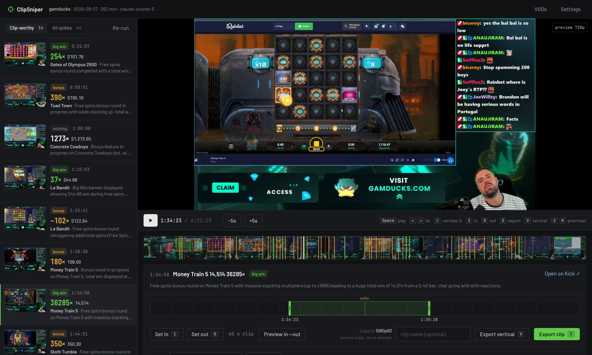

41,782×
Money Train 5
1:34:58 · $0.40 → $16,712.80
Point ClipSniper at a Kick slot stream. It finds the moments a slot went off and the streamer lost it, reads the bet and the win off the screen, and lists them next to the VOD. You pick, trim and export.
Free and MIT licensed. Runs on your machine with your own Anthropic key.
Below is the loudness of the gamducks stream from 27 September, fifteen seconds per bar. ClipSniper sent the 60 loudest spikes to Claude for $0.37 and got fourteen clip-worthy moments back. Hover or tab to a yellow marker to see one.
1:34:58 · $0.40 → $16,712.80

Big win2:37:16 · $0.60 → $7,632.36

Big win1:08:00 · $1.00 → $1,273.10

Big win2:17:35 · $1.00 → $882.10
One ffmpeg pass pulls the audio and a frame every 30 seconds from Kick at 20× realtime. Loudness against a five-minute median marks the spikes.
Claude gets three frames around each spike and reads the slot, bet, win, banner and bonus stage off the game UI.
100× the bet or $1,000 and up counts as a big win. The same frames get the same verdict on every run, and a long bonus collapses into one entry with its final total.
Exports copy the 1080p60 source with no re-encode. Vertical exports stack the cam over the game for TikTok and Shorts, captions optional.

Nothing downloads up front. You scrub the VOD straight off Kick's CDN in your browser.
J K next moment, I O in and out, E export, V vertical.
Every spike the audio flagged stays under All spikes, so you can recover a quiet win.
Export vertical re-encodes your range to 1080×1920. Drag one box over the facecam and one over the game, once per channel, and every clip after that stacks them. These three came straight out of the app, no editor in between.
Tick Burn in captions and the app transcribes just that clip and burns in three-word lines, for under a cent a minute with a Groq or OpenAI key.
Prices are per four-hour VOD. Transcription for funny moments and captions is optional, about $0.17 per four hours on Groq. The app shows you the estimate before it spends anything.
Download it and double-click. Your browser opens the app; add your channel and API key in Settings. ffmpeg downloads itself on first use.
Download clipsniper.exeWindows, macOS or Linux. You need Python 3.10+ and ffmpeg on your PATH.
pipx install git+https://github.com/biceroy/clipsniper clipsniper